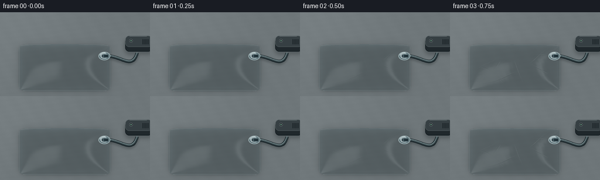
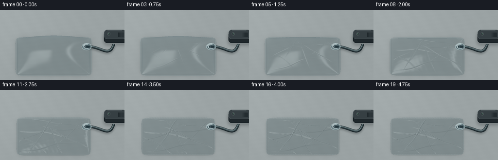
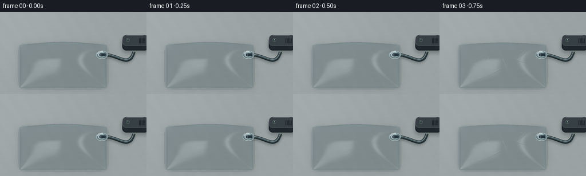
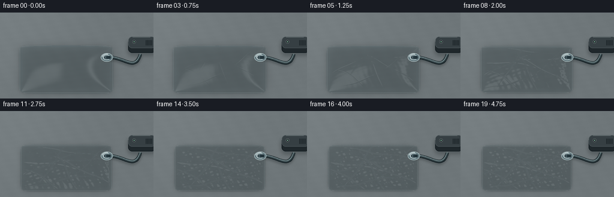

CODING AGENTS AS PIXEL WORLD MODELS
traex/GPT-6.1-Sol · mechanics_0026
点击播放 · 原生 RGB 像素
逐轮保存的候选
回放视频、检查图与代码变化。
每份候选均可单独播放。实际图片检查记录在下方工具轨迹中。
候选 01播放与检查图
点击播放 · 原生 RGB 像素


展开代码变化
--- 上一保存版本
+++ 本次保存版本
@@ -0,0 +1,197 @@
+from pathlib import Path
+import math
+import numpy as np
+from PIL import Image, ImageDraw, ImageFilter
+import artifact_io
+
+ROOT=Path(__file__).resolve().parent
+W,H=768,432
+S=3
+SCALE=132.0
+CX,CY=331.0,287.0
+CO,SI=0.825,0.565
+RATIO=SI/CO
+rng=np.random.default_rng(12)
+yy,xx=np.mgrid[0:H,0:W].astype(np.float32)
+X=(xx-CX)/SCALE
+Y0=(CY-yy)/(SCALE*CO)
+# Fine, quiet, mineral tabletop. All detail stays registered through the shot.
+noise=rng.normal(0,.50,(H,W)).astype(np.float32)
+gr=0.7*np.sin(X*10+Y0*5)+.4*np.sin(Y0*24-X*4)
+light=9*np.exp(-((X+2.4)**2+(Y0-2.5)**2)/10)
+base=np.stack([np.full_like(X,110)+light+noise+gr,
+ np.full_like(X,118)+light+noise+gr,
+ np.full_like(X,121)+light+noise+gr],-1)
+# Creases: long, slightly wandering folds, not a changing noise texture.
+folds=[(-.85,.01,.43,.013,.036,1.1),(.72,-.23,-.5,.015,.042,2.0),
+ (-.34,.40,1.05,.021,.039,3.5),(.1,-.36,-1.1,.012,.032,.4),
+ (.82,.30,.1,.019,.044,2.4),(-1.22,-.31,-.6,.014,.031,4.0),
+ (-.35,-.69,.21,.016,.040,2.9),(.1,.69,-.19,.013,.031,1.3),
+ (1.2,.58,.85,.012,.035,4.3),(-.65,.1,-.18,.026,.024,3.7)]
+
+def dims(t):
+ return 1.79-.075*t,1.115-.042*t
+
+def height(x,y,t):
+ a,b=dims(t)
+ # Corners and hems retain their material extent as the chamber loses volume.
+ q=(np.abs(x)/a)**12+(np.abs(y)/b)**12
+ inside=q<1
+ ai,bi=a-.092,b-.085
+ ux=x/ai;uy=y/bi
+ core=(np.abs(ux)<1)&(np.abs(uy)<1)
+ env=np.maximum(0,1-ux*ux)*np.maximum(0,1-uy*uy)
+ envelope=env**.62
+ puff=.685*(1-t)**1.30+.015
+ z=.034+puff*envelope
+ amount=t**1.25
+ wrinkle=np.zeros_like(x+y)
+ for px,py,ang,width,amp,phase in folds:
+ cs,sn=np.cos(ang),np.sin(ang)
+ dx=x-px;dy=y-py
+ along=dx*cs+dy*sn
+ dist=-dx*sn+dy*cs+.043*np.sin(along*3.5+phase)
+ wrinkle+=amp*np.exp(-(dist/width)**2)*np.exp(-((along)/1.2)**4)
+ wrinkle-=.010*np.exp(-((dist+width*1.5)/(width*1.2))**2)*np.exp(-(along/1.2)**4)
+ # Narrow secondary corrugations gather toward the outlet and sealing margins.
+ ripple=(.0055*np.sin(x*29+y*12+.8*np.sin(y*9))+
+ .0045*np.sin(y*38-x*8+.7*np.sin(x*7)))
+ wave=.023*np.sin(x*7+y*4)*np.sin(y*8-x*2)
+ z+=amount*(wrinkle+ripple+wave)*np.minimum(1,envelope*2.7)
+ # The heat-sealed perimeter is a pair of faintly corrugated flat film layers.
+ seam=.032+.003*np.sin(x*52+y*39)*(t*.8+.2)
+ z=np.where(core,z,seam)
+ return np.where(inside,np.maximum(z,.021),0).astype(np.float32)
+
+def project(x,y,z=0):
+ return (CX+SCALE*x,CY-SCALE*(CO*y+SI*z))
+
+def curve(points,n=90):
+ p=np.array(points,float);t=np.linspace(0,1,n)[:,None]
+ return (1-t)**3*p[0]+3*(1-t)**2*t*p[1]+3*(1-t)*t*t*p[2]+t**3*p[3]
+
+# A stationary vacuum line and a compact charcoal pump, all drawn in supersampled pixels.
+hose=curve([(1.59,.53,.062),(2.23,.51,.09),(2.61,-.19,.13),(2.81,.58,.18)],130)
+HPTS=[project(*p) for p in hose]
+
+def line(draw,pts,fill,width):
+ draw.line(pts, fill=fill, width=max(1,round(width)), joint='curve')
+
+def equipment(im):
+ d=ImageDraw.Draw(im)
+ # Vacuum pump: a rounded low profile housing placed beyond the bag.
+ px,py=project(2.83,1.08,.15)
+ shadow=Image.new('RGBA',im.size)
+ sd=ImageDraw.Draw(shadow)
+ sd.rounded_rectangle((px-68,py-21,px+72,py+59),radius=24,fill=(6,14,18,65))
+ im.alpha_composite(shadow.filter(ImageFilter.GaussianBlur(10)))
+ d=ImageDraw.Draw(im)
+ d.rounded_rectangle((px-64,py-28,px+73,py+44),radius=20,fill=(31,39,43,255),outline=(18,27,31,255),width=3)
+ d.rounded_rectangle((px-63,py-37,px+72,py+20),radius=19,fill=(54,63,67,255),outline=(81,91,94,255),width=2)
+ d.line((px-41,py-35,px+47,py-35),fill=(106,116,119,255),width=2)
+ for j in range(5):
+ d.rounded_rectangle((px+24+j*7,py-20,px+27+j*7,py+7),radius=1,fill=(29,37,41,255))
+ d.ellipse((px-42,py-20,px-25,py-3),fill=(28,36,40,255),outline=(104,113,115,255),width=2)
+ d.ellipse((px-36,py-14,px-31,py-9),fill=(148,209,176,255))
+ # Hose shadow, semi-gloss dark rubber with longitudinal highlight.
+ sh=Image.new('RGBA',im.size)
+ dl=ImageDraw.Draw(sh)
+ line(dl,[(x,y+8) for x,y in HPTS],(9,17,20,70),18)
+ im.alpha_composite(sh.filter(ImageFilter.GaussianBlur(6)))
+ d=ImageDraw.Draw(im)
+ line(d,HPTS,(20,31,35,255),17)
+ line(d,[(x,y-1) for x,y in HPTS],(62,78,82,255),12)
+ line(d,[(x,y-4) for x,y in HPTS],(117,137,140,255),3)
+ line(d,[(x,y+4) for x,y in HPTS],(36,48,52,255),3)
+ # Circular one-way vacuum outlet bonded into the otherwise closed pouch.
+ vx,vy=project(1.54,.53,.055)
+ d.ellipse((vx-30,vy-21,vx+30,vy+21),fill=(106,125,130,255),outline=(191,210,212,255),width=2)
+ d.ellipse((vx-23,vy-16,vx+23,vy+16),fill=(161,178,181,255),outline=(66,90,97,255),width=2)
+ d.ellipse((vx-16,vy-12,vx+16,vy+12),fill=(43,59,65,255),outline=(195,210,212,255),width=2)
+ d.rounded_rectangle((vx-7,vy-9,vx+22,vy+9),radius=5,fill=(44,61,67,255),outline=(116,139,146,255),width=2)
+ for j in range(4):
+ x=vx+3+j*4
+ d.line((x,vy-7,x,vy+7),fill=(25,41,48,255),width=2)
+ d.arc((vx-25,vy-18,vx+25,vy+18),190,285,fill=(226,237,237,255),width=3)
+ return im
+
+def render(t):
+ a,b=dims(t)
+ # Contact shadows grow tighter as the upper sheet settles to the table.
+ inflated=(1-t)**1.3
+ silhouette=((np.abs(X)/a)**12+(np.abs(Y0)/b)**12<1).astype(np.float32)
+ sim=Image.fromarray((silhouette*255).astype('uint8'))
+ broad=np.asarray(sim.filter(ImageFilter.GaussianBlur(9+14*inflated)),dtype=np.float32)/255
+ tight=np.asarray(sim.filter(ImageFilter.GaussianBlur(2+4*inflated)),dtype=np.float32)/255
+ bg=base*(1-(.13*broad+.085*tight)[...,None])
+ # Main sheet intersected by orthographic camera rays. First crossing preserves
+ # the inflated rounded silhouette and naturally lowers it during evacuation.
+ region=(np.abs(X)<1.85)&(Y0>-1.2)&(Y0<1.75)
+ ids=np.flatnonzero(region)
+ x=X.ravel()[ids]; ybase=Y0.ravel()[ids]
+ top=.76
+ last=np.full_like(x,top)
+ lower=np.zeros_like(x);upper=last.copy();found=np.zeros(x.shape,bool)
+ for lev in np.linspace(top,.017,38)[1:]:
+ y=ybase-lev*RATIO
+ surf=height(x,y,t)
+ crossing=(~found)&(surf>=lev)
+ lower[crossing]=lev;upper[crossing]=last[crossing]
+ found|=crossing
+ last.fill(lev)
+ for _ in range(8):
+ z=(lower+upper)*.5
+ y=ybase-z*RATIO
+ hi=height(x,y,t)>=z
+ lower=np.where(hi,z,lower); upper=np.where(hi,upper,z)
+ z=(lower+upper)*.5;y=ybase-z*RATIO
+ eps=.0015
+ dzdx=(height(x+eps,y,t)-height(x-eps,y,t))/(2*eps)
+ dzdy=(height(x,y+eps,t)-height(x,y-eps,t))/(2*eps)
+ n=np.stack([-dzdx,-dzdy,np.ones_like(x)],-1)
+ n/=np.linalg.norm(n,axis=1)[:,None]
+ view=np.array([0,-SI,CO],np.float32)
+ nv=np.maximum(.01,n@view)
+ ref=2*n*nv[:,None]-view
+ # Environment reflections from a large rectangular softbox and its narrow
+ # edge. Clear polymer is chiefly transmission plus Fresnel reflections.
+ rx=ref[:,0];ry=ref[:,1];rz=ref[:,2]
+ box=np.exp(-((rx+.44)/.37)**8-((ry+.31)/.62)**8)*np.clip((rz+.1),0,1)
+ strip=np.exp(-((rx-.49)/.075)**2-((ry-.13)/.68)**6)*np.clip(rz+.3,0,1)
+ fres=.047+.62*(1-nv)**4
+ env=np.stack([92+151*box+119*strip,109+145*box+117*strip,115+141*box+116*strip],-1)
+ trans=bg.reshape(-1,3)[ids].copy()
+ # A little displaced transmitted tabletop light suggests the two thin clear sheets.
+ trans*=np.stack([np.full_like(x,.954),np.full_like(x,.985),np.full_like(x,.989)],-1)
+ color=trans*(1-fres[:,None])+env*fres[:,None]
+ color+=(box*7+strip*10)[:,None]
+ # Fine opposed highlights either side of the sharp collapsed film ridges.
+ wr=t**1.25
+ grazing=np.clip(np.sqrt(dzdx*dzdx+dzdy*dzdy),0,1.5)
+ color+=(wr*2.4*grazing)[:,None]
+ # Two integral heat seals, around all four sides; transparent, not an open zip.
+ ux=np.abs(x)/a;uy=np.abs(y)/b
+ edge=np.minimum((a-np.abs(x)),(b-np.abs(y)))
+ seam1=np.exp(-((edge-.029)/.008)**2)
+ seam2=np.exp(-((edge-.065)/.006)**2)
+ sealband=(edge<.09).astype(float)
+ color=color*(1-.048*sealband[:,None])+(seam1*27+seam2*14)[:,None]
+ # Slightly stronger back-edge joined strip, double ridge on the sealed pouch.
+ back=np.exp(-((y-(b-.075))/.013)**2)*(np.abs(x)<a-.08)
+ color+=back[:,None]*15
+ output=bg.reshape(-1,3).copy()
+ output[ids[found]]=color[found]
+ arr=np.clip(output.reshape(H,W,3),0,255).astype('uint8')
+ im=Image.fromarray(arr).convert('RGBA')
+ im=equipment(im)
+ return np.asarray(im.convert('RGB').resize((256,144),Image.Resampling.LANCZOS))
+
+frames=[]
+for i in range(20):
+ p=i/19
+ # Timelapse: smooth evacuation, followed by the final fully evacuated state.
+ t=min(1,p/0.90)
+ t=t*t*(3-2*t)
+ frames.append(render(t))
+ print('Rendered',i,flush=True)
+artifact_io.save(np.stack(frames),ROOT)
候选 02播放与检查图
点击播放 · 原生 RGB 像素


展开代码变化
--- 上一保存版本
+++ 本次保存版本
@@ -19,9 +19,9 @@
noise=rng.normal(0,.50,(H,W)).astype(np.float32)
gr=0.7*np.sin(X*10+Y0*5)+.4*np.sin(Y0*24-X*4)
light=9*np.exp(-((X+2.4)**2+(Y0-2.5)**2)/10)
-base=np.stack([np.full_like(X,110)+light+noise+gr,
- np.full_like(X,118)+light+noise+gr,
- np.full_like(X,121)+light+noise+gr],-1)
+base=np.stack([np.full_like(X,154)+light+noise+gr,
+ np.full_like(X,162)+light+noise+gr,
+ np.full_like(X,163)+light+noise+gr],-1)
# Creases: long, slightly wandering folds, not a changing noise texture.
folds=[(-.85,.01,.43,.013,.036,1.1),(.72,-.23,-.5,.015,.042,2.0),
(-.34,.40,1.05,.021,.039,3.5),(.1,-.36,-1.1,.012,.032,.4),
@@ -42,7 +42,7 @@
core=(np.abs(ux)<1)&(np.abs(uy)<1)
env=np.maximum(0,1-ux*ux)*np.maximum(0,1-uy*uy)
envelope=env**.62
- puff=.685*(1-t)**1.30+.015
+ puff=.94*(1-t)**1.30+.015
z=.034+puff*envelope
amount=t**1.25
wrinkle=np.zeros_like(x+y)
@@ -54,9 +54,9 @@
wrinkle+=amp*np.exp(-(dist/width)**2)*np.exp(-((along)/1.2)**4)
wrinkle-=.010*np.exp(-((dist+width*1.5)/(width*1.2))**2)*np.exp(-(along/1.2)**4)
# Narrow secondary corrugations gather toward the outlet and sealing margins.
- ripple=(.0055*np.sin(x*29+y*12+.8*np.sin(y*9))+
- .0045*np.sin(y*38-x*8+.7*np.sin(x*7)))
- wave=.023*np.sin(x*7+y*4)*np.sin(y*8-x*2)
+ ripple=(.0010*np.sin(x*29+y*12+.8*np.sin(y*9))+
+ .0008*np.sin(y*38-x*8+.7*np.sin(x*7)))
+ wave=.006*np.sin(x*7+y*4)*np.sin(y*8-x*2)
z+=amount*(wrinkle+ripple+wave)*np.minimum(1,envelope*2.7)
# The heat-sealed perimeter is a pair of faintly corrugated flat film layers.
seam=.032+.003*np.sin(x*52+y*39)*(t*.8+.2)
@@ -123,7 +123,7 @@
sim=Image.fromarray((silhouette*255).astype('uint8'))
broad=np.asarray(sim.filter(ImageFilter.GaussianBlur(9+14*inflated)),dtype=np.float32)/255
tight=np.asarray(sim.filter(ImageFilter.GaussianBlur(2+4*inflated)),dtype=np.float32)/255
- bg=base*(1-(.13*broad+.085*tight)[...,None])
+ bg=base*(1-(.070*broad+.055*tight)[...,None])
# Main sheet intersected by orthographic camera rays. First crossing preserves
# the inflated rounded silhouette and naturally lowers it during evacuation.
region=(np.abs(X)<1.85)&(Y0>-1.2)&(Y0<1.75)
@@ -132,14 +132,14 @@
top=.76
last=np.full_like(x,top)
lower=np.zeros_like(x);upper=last.copy();found=np.zeros(x.shape,bool)
- for lev in np.linspace(top,.017,38)[1:]:
+ for lev in np.linspace(top,.017,23)[1:]:
y=ybase-lev*RATIO
surf=height(x,y,t)
crossing=(~found)&(surf>=lev)
lower[crossing]=lev;upper[crossing]=last[crossing]
found|=crossing
last.fill(lev)
- for _ in range(8):
+ for _ in range(6):
z=(lower+upper)*.5
y=ybase-z*RATIO
hi=height(x,y,t)>=z
@@ -158,7 +158,7 @@
rx=ref[:,0];ry=ref[:,1];rz=ref[:,2]
box=np.exp(-((rx+.44)/.37)**8-((ry+.31)/.62)**8)*np.clip((rz+.1),0,1)
strip=np.exp(-((rx-.49)/.075)**2-((ry-.13)/.68)**6)*np.clip(rz+.3,0,1)
- fres=.047+.62*(1-nv)**4
+ fres=.11+.62*(1-nv)**4
env=np.stack([92+151*box+119*strip,109+145*box+117*strip,115+141*box+116*strip],-1)
trans=bg.reshape(-1,3)[ids].copy()
# A little displaced transmitted tabletop light suggests the two thin clear sheets.
@@ -169,6 +169,16 @@
wr=t**1.25
grazing=np.clip(np.sqrt(dzdx*dzdx+dzdy*dzdy),0,1.5)
color+=(wr*2.4*grazing)[:,None]
+ # Long continuous crease ridges become visible as the chamber collapses.
+ creaselight=np.zeros_like(x)
+ for px,py,ang,width,amp,phase in folds:
+ cs,sn=np.cos(ang),np.sin(ang)
+ along=(x-px)*cs+(y-py)*sn
+ dist=-(x-px)*sn+(y-py)*cs+.043*np.sin(along*3.5+phase)
+ length=np.exp(-(along/1.2)**4)
+ creaselight+=(20*np.exp(-((dist-width*.65)/(width*.6))**2)-11*np.exp(-((dist+width*.8)/(width*.85))**2))*length
+ ce=np.minimum(1,np.maximum(0,1-(x/(a-.10))**2)*np.maximum(0,1-(y/(b-.10))**2)*4)
+ color+=(wr*creaselight*ce)[:,None]
# Two integral heat seals, around all four sides; transparent, not an open zip.
ux=np.abs(x)/a;uy=np.abs(y)/b
edge=np.minimum((a-np.abs(x)),(b-np.abs(y)))
可观测工具轨迹
实际执行的命令与返回图片。
命令 1exit 0
/bin/bash -lc 'ls -la && cat prompt.txt && cat GENERATION_RULES.md && cat task_spec.json'
命令 2exit 0
/bin/bash -lc "cat artifact_io.py && python - <<'PY'
import numpy,PIL
print('available')
PY"命令 3exit 0
/bin/bash -lc "cat > generate.py <<'PY'
from pathlib import Path
import math
import numpy as np
from PIL import Image, ImageDraw, ImageFilter
import artifact_io
ROOT=Path(__file__).resolve().parent
W,H=768,432
S=3
SCALE=132.0
CX,CY=331.0,287.0
CO,SI=0.825,0.565
RATIO=SI/CO
rng=np.random.default_rng(12)
yy,xx=np.mgrid[0:H,0:W].astype(np.float32)
X=(xx-CX)/SCALE
Y0=(CY-yy)/(SCALE*CO)
# Fine, quiet, mineral tabletop. All detail stays registered through the shot.
noise=rng.normal(0,.50,(H,W)).astype(np.float32)
gr=0.7*np.sin(X*10+Y0*5)+.4*np.sin(Y0*24-X*4)
light=9*np.exp(-((X+2.4)**2+(Y0-2.5)**2)/10)
base=np.stack([np.full_like(X,110)+light+noise+gr,
np.full_like(X,118)+light+noise+gr,
np.full_like(X,121)+light+noise+gr],-1)
# Creases: long, slightly wandering folds, not a changing noise texture.
folds=[(-.85,.01,.43,.013,.036,1.1),(.72,-.23,-.5,.015,.042,2.0),
(-.34,.40,1.05,.021,.039,3.5),(.1,-.36,-1.1,.012,.032,.4),
(.82,.30,.1,.019,.044,2.4),(-1.22,-.31,-.6,.014,.031,4.0),
(-.35,-.69,.21,.016,.040,2.9),(.1,.69,-.19,.013,.031,1.3),
(1.2,.58,.85,.012,.035,4.3),(-.65,.1,-.18,.026,.024,3.7)]
def dims(t):
return 1.79-.075*t,1.115-.042*t
def height(x,y,t):
a,b=dims(t)
# Corners and hems retain their material extent as the chamber loses volume.
q=(np.abs(x)/a)**12+(np.abs(y)/b)**12
inside=q<1
ai,bi=a-.092,b-.085
ux=x/ai;uy=y/bi
core=(np.abs(ux)<1)&(np.abs(uy)<1)
env=np.maximum(0,1-ux*ux)*np.maximum(0,1-uy*uy)
envelope=env**.62
puff=.685*(1-t)**1.30+.015
z=.034+puff*envelope
amount=t**1.25
wrinkle=np.zeros_like(x+y)
for px,py,ang,width,amp,phase in folds:
cs,sn=np.cos(ang),np.sin(ang)
dx=x-px;dy=y-py
along=dx*cs+dy*sn
dist=-dx*sn+dy*cs+.043*np.sin(along*3.5+phase)
wrinkle+=amp*np.exp(-(dist/width)**2)*np.exp(-((along)/1.2)**4)
wrinkle-=.010*np.exp(-((dist+width*1.5)/(width*1.2))**2)*np.exp(-(along/1.2)**4)
# Narrow secondary corrugations gather toward the outlet and sealing margins.
ripple=(.0055*np.sin(x*29+y*12+.8*np.sin(y*9))+
.0045*np.sin(y*38-x*8+.7*np.sin(x*7)))
wave=.023*np.sin(x*7+y*4)*np.sin(y*8-x*2)
z+=amount*(wrinkle+ripple+wave)*np.minimum(1,envelope*2.7)
# The heat-sealed perimeter is a pair of faintly corrugated flat film layers.
seam=.032+.003*np.sin(x*52+y*39)*(t*.8+.2)
z=np.where(core,z,seam)
return np.where(inside,np.maximum(z,.021),0).astype(np.float32)
def project(x,y,z=0):
return (CX+SCALE*x,CY-SCALE*(CO*y+SI*z))
def curve(points,n=90):
p=np.array(points,float);t=np.linspace(0,1,n)[:,None]
return (1-t)**3*p[0]+3*(1-t)**2*t*p[1]+3*(1-t)*t*t*p[2]+t**3*p[3]
# A stationary vacuum line and a compact charcoal pump, all drawn in supersampled pixels.
hose=curve([(1.59,.53,.062),(2.23,.51,.09),(2.61,-.19,.13),(2.81,.58,.18)],130)
HPTS=[project(*p) for p in hose]
def line(draw,pts,fill,width):
draw.line(pts, fill=fill, width=max(1,round(width)), joint='curve')
def equipment(im):
d=ImageDraw.Draw(im)
# Vacuum pump: a rounded low profile housing placed beyond the bag.
px,py=project(2.83,1.08,.15)
shadow=Image.new('RGBA',im.size)
sd=ImageDraw.Draw(shadow)
sd.rounded_rectangle((px-68,py-21,px+72,py+59),radius=24,fill=(6,14,18,65))
im.alpha_composite(shadow.filter(ImageFilter.GaussianBlur(10)))
d=ImageDraw.Draw(im)
d.rounded_rectangle((px-64,py-28,px+73,py+44),radius=20,fill=(31,39,43,255),outline=(18,27,31,255),width=3)
d.rounded_rectangle((px-63,py-37,px+72,py+20),radius=19,fill=(54,63,67,255),outline=(81,91,94,255),width=2)
d.line((px-41,py-35,px+47,py-35),fill=(106,116,119,255),width=2)
for j in range(5):
d.rounded_rectangle((px+24+j*7,py-20,px+27+j*7,py+7),radius=1,fill=(29,37,41,255))
d.ellipse((px-42,py-20,px-25,py-3),fill=(28,36,40,255),outline=(104,113,115,255),width=2)
d.ellipse((px-36,py-14,px-31,py-9),fill=(148,209,176,255))
# Hose shadow, semi-gloss dark rubber with longitudinal highlight.
sh=Image.new('RGBA',im.size)
dl=ImageDraw.Draw(sh)
line(dl,[(x,y+8) for x,y in HPTS],(9,17,20,70),18)
im.alpha_composite(sh.filter(ImageFilter.GaussianBlur(6)))
d=ImageDraw.Draw(im)
line(d,HPTS,(20,31,35,255),17)
line(d,[(x,y-1) for x,y in HPTS],(62,78,82,255),12)
line(d,[(x,y-4) for x,y in HPTS],(117,137,140,255),3)
line(d,[(x,y+4) for x,y in HPTS],(36,48,52,255),3)
# Circular one-way vacuum outlet bonded into the otherwise closed pouch.
vx,vy=project(1.54,.53,.055)
d.ellipse((vx-30,vy-21,vx+30,vy+21),fill=(106,125,130,255),outline=(191,210,212,255),width=2)
d.ellipse((vx-23,vy-16,vx+23,vy+16),fill=(161,178,181,255),outline=(66,90,97,255),width=2)
d.ellipse((vx-16,vy-12,vx+16,vy+12),fill=(43,59,65,255),outline=(195,210,212,255),width=2)
d.rounded_rectangle((vx-7,vy-9,vx+22,vy+9),radius=5,fill=(44,61,67,255),outline=(116,139,146,255),width=2)
for j in range(4):
x=vx+3+j*4
d.line((x,vy-7,x,vy+7),fill=(25,41,48,255),width=2)
d.arc((vx-25,vy-18,vx+25,vy+18),190,285,fill=(226,237,237,255),width=3)
return im
def render(t):
a,b=dims(t)
# Contact shadows grow tighter as the upper sheet settles to the table.
inflated=(1-t)**1.3
silhouette=((np.abs(X)/a)**12+(np.abs(Y0)/b)**12<1).astype(np.float32)
sim=Image.fromarray((silhouette*255).astype('uint8'))
broad=np.asarray(sim.filter(ImageFilter.GaussianBlur(9+14*inflated)),dtype=np.float32)/255
tight=np.asarray(sim.filter(ImageFilter.GaussianBlur(2+4*inflated)),dtype=np.float32)/255
bg=base*(1-(.13*broad+.085*tight)[...,None])
# Main sheet intersected by orthographic camera rays. First crossing preserves
# the inflated rounded silhouette and naturally lowers it during evacuation.
region=(np.abs(X)<1.85)&(Y0>-1.2)&(Y0<1.75)
ids=np.flatnonzero(region)
x=X.ravel()[ids]; ybase=Y0.ravel()[ids]
top=.76
last=np.full_like(x,top)
lower=np.zeros_like(x);upper=last.copy();found=np.zeros(x.shape,bool)
for lev in np.linspace(top,.017,38)[1:]:
y=ybase-lev*RATIO
surf=height(x,y,t)
crossing=(~found)&(surf>=lev)
lower[crossing]=lev;upper[crossing]=last[crossing]
found|=crossing
last.fill(lev)
for _ in range(8):
z=(lower+upper)*.5
y=ybase-z*RATIO
hi=height(x,y,t)>=z
lower=np.where(hi,z,lower); upper=np.where(hi,upper,z)
z=(lower+upper)*.5;y=ybase-z*RATIO
eps=.0015
dzdx=(height(x+eps,y,t)-height(x-eps,y,t))/(2*eps)
dzdy=(height(x,y+eps,t)-height(x,y-eps,t))/(2*eps)
n=np.stack([-dzdx,-dzdy,np.ones_like(x)],-1)
n/=np.linalg.norm(n,axis=1)[:,None]
view=np.array([0,-SI,CO],np.float32)
nv=np.maximum(.01,n@view)
ref=2*n*nv[:,None]-view
# Environment reflections from a large rectangular softbox and its narrow
# edge. Clear polymer is chiefly transmission plus Fresnel reflections.
rx=ref[:,0];ry=ref[:,1];rz=ref[:,2]
box=np.exp(-((rx+.44)/.37)**8-((ry+.31)/.62)**8)*np.clip((rz+.1),0,1)
strip=np.exp(-((rx-.49)/.075)**2-((ry-.13)/.68)**6)*np.clip(rz+.3,0,1)
fres=.047+.62*(1-nv)**4
env=np.stack([92+151*box+119*strip,109+145*box+117*strip,115+141*box+116*strip],-1)
trans=bg.reshape(-1,3)[ids].copy()
# A little displaced transmitted tabletop light suggests the two thin clear sheets.
trans*=np.stack([np.full_like(x,.954),np.full_like(x,.985),np.full_like(x,.989)],-1)
color=trans*(1-fres[:,None])+env*fres[:,None]
color+=(box*7+strip*10)[:,None]
# Fine opposed highlights either side of the sharp collapsed film ridges.
wr=t**1.25
grazing=np.clip(np.sqrt(dzdx*dzdx+dzdy*dzdy),0,1.5)
color+=(wr*2.4*grazing)[:,None]
# Two integral heat seals, around all four sides; transparent, not an open zip.
ux=np.abs(x)/a;uy=np.abs(y)/b
edge=np.minimum((a-np.abs(x)),(b-np.abs(y)))
seam1=np.exp(-((edge-.029)/.008)**2)
seam2=np.exp(-((edge-.065)/.006)**2)
sealband=(edge<.09).astype(float)
color=color*(1-.048*sealband[:,None])+(seam1*27+seam2*14)[:,None]
# Slightly stronger back-edge joined strip, double ridge on the sealed pouch.
back=np.exp(-((y-(b-.075))/.013)**2)*(np.abs(x)<a-.08)
color+=back[:,None]*15
output=bg.reshape(-1,3).copy()
output[ids[found]]=color[found]
arr=np.clip(output.reshape(H,W,3),0,255).astype('uint8')
im=Image.fromarray(arr).convert('RGBA')
im=equipment(im)
return np.asarray(im.convert('RGB').resize((256,144),Image.Resampling.LANCZOS))
frames=[]
for i in range(20):
p=i/19
# Timelapse: smooth evacuation, followed by the final fully evacuated state.
t=min(1,p/0.90)
t=t*t*(3-2*t)
frames.append(render(t))
print('Rendered',i,flush=True)
artifact_io.save(np.stack(frames),ROOT)
PY
python generate.py"命令 4exit 0
/bin/bash -lc "python - <<'PY'
p='generate.py'
s=open(p).read().replace('np.full_like(X,110)','np.full_like(X,154)').replace('np.full_like(X,118)','np.full_like(X,162)').replace('np.full_like(X,121)','np.full_like(X,163)')
s=s.replace('puff=.685','puff=.94').replace('ripple=(.0055','ripple=(.0010').replace('.0045*np.sin','.0008*np.sin').replace('wave=.023','wave=.006')
s=s.replace('(.13*broad+.085*tight)','(.070*broad+.055*tight)').replace('38)[1:]','23)[1:]').replace('range(8):','range(6):')
s=s.replace('fres=.047+.62*(1-nv)**4','fres=.11+.62*(1-nv)**4')
s=s.replace('color+=(wr*2.4*grazing)[:,None]', '''color+=(wr*2.4*grazing)[:,None]
# Long continuous crease ridges become visible as the chamber collapses.
creaselight=np.zeros_like(x)
for px,py,ang,width,amp,phase in folds:
cs,sn=np.cos(ang),np.sin(ang)
along=(x-px)*cs+(y-py)*sn
dist=-(x-px)*sn+(y-py)*cs+.043*np.sin(along*3.5+phase)
length=np.exp(-(along/1.2)**4)
creaselight+=(20*np.exp(-((dist-width*.65)/(width*.6))**2)-11*np.exp(-((dist+width*.8)/(width*.85))**2))*length
ce=np.minimum(1,np.maximum(0,1-(x/(a-.10))**2)*np.maximum(0,1-(y/(b-.10))**2)*4)
color+=(wr*creaselight*ce)[:,None]''')
open(p,'w').write(s)
PY
python generate.py"命令 5exit 127
/bin/bash -lc 'ffmpeg -hide_banner -loglevel error -y -framerate 4 -i frames/%02d.png -c:v libx264 -pix_fmt yuv420p -r 4 video.mp4 && ls -lh video.mp4 pixels.npz index.html generate.py'
命令 6exit 0
/bin/bash -lc "ls -lh pixels.npz index.html inspection.png generate.py && python - <<'PY'
import numpy as np
p=np.load('pixels.npz')['pixels'];print('Verified:',p.shape,p.dtype)
PY"视觉工具实际返回图片 1

视觉工具实际返回图片 2

保存候选 2 份；完成命令 6 次；可验证图片返回 2 张。原始 API 响应与完整日志保留在本地。